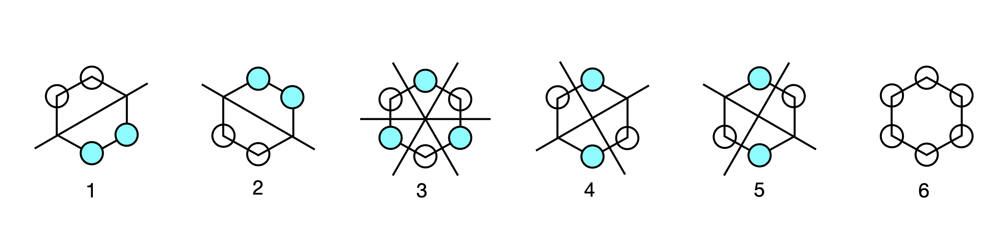

Solutions Q45 - 50¶
# import all python add-ons etc that will be needed later on
%matplotlib inline
import numpy as np
from numpy import linalg as LA
import matplotlib.pyplot as plt
from sympy import *
init_printing() # allows printing of SymPy results in typeset maths format
plt.rcParams.update({'font.size': 14}) # set font size for plots
Q45 answer¶
(a) \(\displaystyle \begin{vmatrix} 4-\lambda & -i\\i & 2-\lambda \end{vmatrix}=\lambda^2-6\lambda+7=0 \)
is the characteristic equation from which \(\lambda_1=3-\sqrt{2}; \;\lambda_2=3+\sqrt{2}\).
The normalised vectors are \(\displaystyle x_1=\begin{bmatrix}0.3827i\\0.9239 \end{bmatrix},\; x_2=\begin{bmatrix}0.9239\\0.3827i \end{bmatrix} \).
To check on the normalization, form the dot product, and make sure that the left-hand vector is the complex conjugate of the transpose of the right-hand one, \(x^{*}\cdot x\).
therefore, they are normalized. If the eigenvectors are orthogonal then \(x_1^*\cdot x_2 = 0\) ; the calculation gives
which is to be expected for a symmetrical matrix.
(b) \(\displaystyle \begin{vmatrix} 1-\lambda & -i\\i & 1-\lambda \end{vmatrix}=(1-\lambda)^21=0 \),
solving produces \(\lambda_1=1+i,\; \lambda_2=1-i\). The normalised eivenvectors are
Q46 answer¶
The large matrix contains two \(1 \times 1\) matrices and two \(2\times 2\) matrices. Two eigenvalues can be found immediately, and are one and two. The other two matrices can be separated out and secular equations written, one of which is
which has the characteristic equation \(\lambda^2 - 5\lambda - 14 = 0\). The eigenvalues are \(\lambda = -2\) and \(7\). The other \(2 \times 2\) matrix has two eigenvalues \(\lambda= = 3 \pm 10\).
Q47 answer¶
The characteristic equation is calculated from the determinant
and solving this will produce the eigenvalues, but as it is a cubic we use Sympy. The \(\mathtt{M.eigenvects()}\) instruction produces both the paired up eigenvalues and the eigenvectors.
u, v = symbols('u, v')
M = Matrix([[0,-u,v],[u,0,0],[-v,0,0] ] )
M.eigenvals()
ans = M.eigenvects()
ans
simplify(ans[1][2][0] ) # 2ndset of values, 3rd entry. [0] gets indside vector
simplify(ans[2][2][0] )
The eigenvalues are simplified by substituting for \(z\) to be \(\lambda =(iz, -iz,0)\) and the eigenvector matrix
Q48 answers¶
The Hückel matrix \(M\) is formed as in Section 2.5(iii) and using python/Sympy, the eigenvalues and eigenvectors are calculated as in the previous few examples. The eigenvectors are normalized by extracting a column vector from the matrix of eigenvectors and dividing by the square root of the dot product. If the vector is \(x\), then the dot product \(x^*\cdot x = |x|^2\), because \(\cos(0) = 1\), therefore, the normalized vector is \(x/\sqrt{x^*\cdot x}\). The coefficients are the individual values of the eigenvector matrix. The algebraic solutions for the eigenvectors are complex, and for numerical answer at least one value in the matrix should be made into a floating point (1.0).
# Algorithm Eigenvalues and Eigenvector of Butadiene
# using Sympy for algebraic solutions
n = 4 # n = number of atoms
x = symbols('x')
M = Matrix([ [x,1.0,0,0],[1,x,1,0] , [0,1,x,1], [0,0,1,x ] ]) # Huckel matrix
M.eigenvals()
It is simpler for numerical calculations to use numpy and so make \(x=0\) and solve the eigenvalue/eigenvector matrix. The eigenvalues are also normalised
M = np.array([ [0,1.0,0,0], [1,0,1,0], [0,1,0,1], [0,0,1,0 ]]) # Huckel matrix
ans = LA.eigh(M)
ans[0]
array([-1.61803399, -0.61803399, 0.61803399, 1.61803399])
ans[1]
array([[ 0.37174803, -0.60150096, -0.60150096, 0.37174803],
[-0.60150096, 0.37174803, -0.37174803, 0.60150096],
[ 0.60150096, 0.37174803, 0.37174803, 0.60150096],
[-0.37174803, -0.60150096, 0.60150096, 0.37174803]])
The order in which the eigenvalues and so eigenvectors are displayed is always the same as one another, however, which eigenvalue is first and which second and so forth, is arbitrary, and may not be the same in your calculation as is shown here.
As the value \(\alpha\) is the same in all eigenvalues, being the self energy of a carbon \(\pi\) electron this value can arbitrarily be set to zero then the energy is relative to this value. The lowest energy eigenvalue is
thus the lowest energy is
and this is because \(\beta\) has a negative value. This eigenvalue corresponds to the wavefunction with coefficients (the eigenvector’s values) all having the same sign and is column 2 in the eigenvector (modal) matrix and in the same relative position as its eigenvalue. The next to lowest energy is eigenvalue 1 (column 1) as it contains one node and these two lowest orbitals contain 2 electrons each.
The highest energy orbital has the most nodes, that is the most changes of sign in the pattern of eigenvectors, and this is entry 3 with eigenvalue \(x-(1+\sqrt{5})/2\), and therefore \(\displaystyle E_4=\alpha -\frac{1+\sqrt{5}}{2}\beta\).
The pattern of orbital coefficients is shown in Figure 88; the negative coefficients are filled in. The electron density is the square of these numbers. In fact we could reverse the sign of all the coefficients and the result would be the same. This is generally true for eigenvectors as they are determined only to within an arbitrary constant, which is usually taken to be \(1\), but it could just as easily be \(-1\); hence the possibility of reversed sign on each value.
Figure 88. The pattern of butadiene MOs. The size is proportional to the element in the eigenvector (approx \(0.37\) and \(0.6\)); coloured circles are negative and discs positive phase.
The \(\pi\) bond order is
which must be transformed into python code. The individual eigenvector values are needed, because these are the \(c\) coefficients, and \(a\) and \(b\) label the molecules 1 to 4, and \(i\) labels the eigenvector columns corresponding to orbitals 1 to 4. The bond order calculated when label \(a = b\), does not make sense, as a bond has to be between different atoms. Similarly, because butadiene is a linear molecule a bond between atoms 1 and 3 or 2 and 4 etc. does not occur and therefore all of these terms have to be ignored. The bond order 1 to 2 is the same as 2 to 1 and so on, therefore only one of each of these pairs needs to be calculated. This is done by calculating only between one atom and its nearest neighbour. If the molecule is more complex, such as fulvalene, it is safer to calculate the whole matrix of bond orders, then eliminate by hand the ones that are not physically possible.
print('pi bond orders')
evects = ans[1]
ne = [2,2,0,0] # number of electrons in orbitals in same order as eigvalues
rho = np.zeros((n,n),dtype=float) # 2D array
for a in range(n):
for b in range(n):
s = 0.0
for i in range(n):
if b == a + 1:
s = s + ne[i]*evects[b,i]*evects[a,i]
pass
rho[a,b] = np.abs(s)
if rho[a,b] > 0:
print(' {:d} - {:d} {:6.3f}'.format( a+1, b+1, rho[a,b]) )
pi bond orders
1 - 2 0.894
2 - 3 0.447
3 - 4 0.894
print('atom number and charge density')
for a in range(n):
s = 0
for i in range(n):
s = s + ne[i]*np.abs(evects[a,i])**2
print('{:d}{:8.4f}'.format( a+1,s) ) # charge densities atoms 1 to 4
atom number and charge density
1 1.0000
2 1.0000
3 1.0000
4 1.0000
Because the electron charge densities are all the same, the molecule cannot have a dipole.
Q49 answer¶
The Huckel matrix for fulvalene is
Using the algebraic calculation above produces very complicated solutions whose exact form is not of any interest to us. This is generally the case for largish Huckel matrices. To find the eigenvectors and eigenvalues it is necessary to make \(x=0\) first and it is easiest then to use python/numpy to obtain numerical values.
n = 6
M0 = np.array([ [0,1,0,0,0,0 ], [1,0,1,0,0,1], [0,1,0,1,0,0],\
[0,0,1,0,1,0 ], [0,0,0,1,0,1], [0,1,0,0,1,0]]) # Huckel matrix x=0
ans = LA.eigh(M0) # using numpy linear algebra for numerical values
for i in range(n):
print(i, ans[0][i]) # list of eigenvalues
0 -1.860805853111703
1 -1.6180339887498958
2 -0.2541016883650524
3 0.6180339887498948
4 1.0
5 2.1149075414767546
print('normalised eigenvectors columnwise')
evects = ans[1]
for i in range(n):
print(' '.join( '{:8.4f}'.format( evects[i,j] ) for j in range(n) ) )
normalised eigenvectors columnwise
0.3566 -0.0000 0.7495 0.0000 -0.5000 -0.2473
-0.6635 0.0000 -0.1904 0.0000 -0.5000 -0.5230
0.4390 -0.3717 -0.3505 -0.6015 -0.0000 -0.4294
-0.1535 0.6015 0.2795 -0.3717 0.5000 -0.3851
-0.1535 -0.6015 0.2795 0.3717 0.5000 -0.3851
0.4390 0.3717 -0.3505 0.6015 -0.0000 -0.4294
print('Bond order')
ne = [0,0,0,2,2,2] # number of electrons in orbitals in same order as eigvalues
rho = np.zeros((n,n),dtype=float) # 2D array
for a in range(n):
for b in range(n):
s = 0.0
for i in range(n):
if b == a + 1:
s = s + ne[i]*evects[b,i]*evects[a,i]
pass
rho[a,b] = np.abs(s)
if rho[a,b] > 0:
print(' {:d} - {:d} {:6.3f}'.format( a+1, b+1, rho[a,b]) )
Bond order
1 - 2 0.759
2 - 3 0.449
3 - 4 0.778
4 - 5 0.520
5 - 6 0.778
print('atom number and charge density')
for a in range(n):
s = 0
for i in range(n):
s = s + ne[i]*(evects[a,i])**2
print('{:d}{:8.4f}'.format( a+1,s) ) # charge densities atoms 1 to 4
atom number and charge density
1 0.6223
2 1.0470
3 1.0923
4 1.0730
5 1.0730
6 1.0923
THe dipole is calculated with
Using the geometry of the molecule (internal angle \(180-72\) degrees ) to calculate the atom positions along the \(C_2\) axis produces the dipole along that direction in units of \(eL\);
d_pi = (-(1-0.622) + 0*(1-1.047) + 2*(1-1.0923)*np.sin(36*np.pi/180) \
+ 2*(1-1.0730)*(np.sin(36*np.pi/180)+np.cos(18*np.pi/180)) )
print('{:s} {:6.3f}'.format(' dipole = ',d_pi) )
dipole = -0.711
Q50 answer¶
The eigenvalues and un-normalized eigenvectors are found using the calculation below;
# Huckel determinant for benzene using Sympy/python
n, M, x = symbols('n, M, x') # benzene
n = 6
M = zeros(n,n) # define nxn array as zeros
for i in range(n):
M[i,i] = x
if (i > -1) and (i < n-1 ): # +1,-1 off diagonals
M[i,i+1] = 1
M[i+1,i] = 1
pass
M[n-1,0] = 1
M[0,n-1] = 1
M
M.eigenvects() # order is: eigenval, degeneracy, eigevector. labelled 1 to 6 in text
The order of the energies is that \(2 + x\) is the lowest; then a degenerate pair at energy \(x + 1\), and at \(x - 1\), and the highest at \(x - 2\); recall that \(\displaystyle x=\frac{\alpha-E}{\beta }\) and that \(\beta\) is negative. The of nodes in the eigenvectors determines the energy, with the lowest being the eigenvector where each element has the same sign; in this example this is number 6. The highest energy orbital has the most changes in sign and is number 1.
Plotting out orbital coefficients using the eigenvector columns, gives the orbital patterns with the filled in circle as the negative phase of the \(\pi\) orbital and the open circle as the positive one; no circle indicates zero coefficient and no electron density. The first pattern corresponds to eigenvector with energy \(x + 2\), and so on, in descending order of eigenvalue and eigenvector column index and in ascending order of energy.

Figure 89. Benzene Huckel MO’s.
The second and third eigenvectors are related by a \(180^\mathrm{o}\) rotation about the principal axis, which is perpendicular to the plane of the molecule. The same is true of the patterns of the fourth and fifth, but by a mirror plane, and they are also degenerate in energy. Making a plus and minus linear combination of orbitals five and four produces two new MOs still with the same energy but which in physical terms make more sense. Each new MO still has two nodes. The first pair make the two symmetry adapted linear combinations or SALCs, and one of the pair has the same pattern as one of the original MOs (number 5) the other is clearly different. Only the degenerate orbitals can interact in this way to form new combinations. The second pair, 2 and 3, also form two SALC MOs and each has two nodes.
Figure 90. Linear combinations of benzene MO’s.